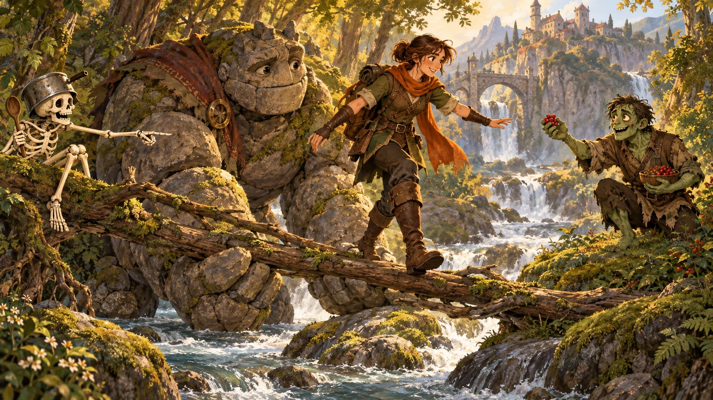

ひだまりの森の語り手
朗読を再生できませんでした。再試行するか、音声なしで読めます。
おしまい。明日の食卓で、また会いましょう。

A STORY OF KINDNESS & EXTRAORDINARY LUCK
鍋をかぶった骸骨。食いしん坊のゾンビ。
眠らない石の巨人。
三人の遠回りが、世界にひとつずつ席を作る。
全17章 · 日本語朗読つき · いつでも続きから
物語を読み込んでいます…
← →：前後へ Space：朗読の再生・停止 M：目次 ／ 進み具合はこの端末に保存されます。